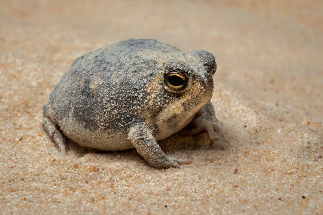

Desert Rain Frog
The Desert Rain Frog is known for its unique squeaking sound, reminiscent of a dog toy. Native to the sandy shores of Namibia and South Africa, this amphibian spends its days burrowed beneath the surface, emerging at night to hunt. Its transparent underside is a fascinating adaptation, offering a glimpse into the internal workings of this small but remarkable creature.
Sources: "Desert Rain Frog." A-Z Animals, https://a-z-animals.com/animals/desert-rain-frog/.